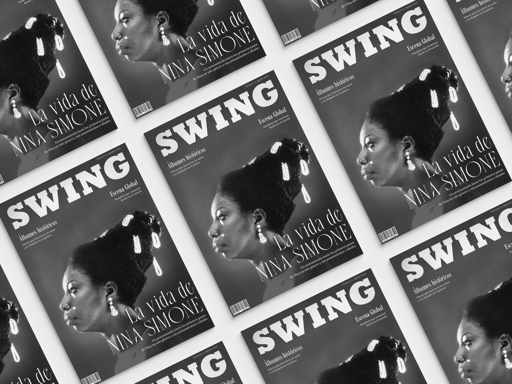
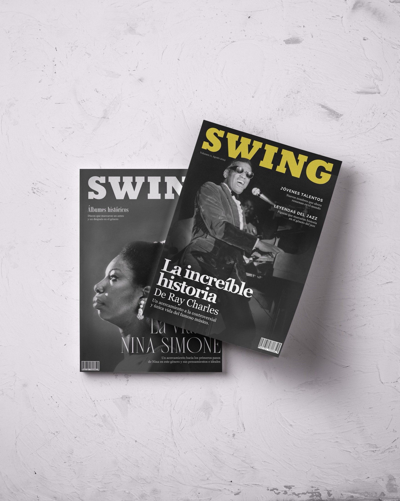

REVISTA SWING
Diseño Editorial

Una revista temática de jazz que busca captar la esencia del género y recorrer sus distintos aspectos a través de la historia.
Estructura vs. Jerarquía
La principal tarea editorial fue la definición de una retícula modular robusta. El rigor tipográfico de la Neue Haas Grotesk actúa como la estructura, mientras que los espacios en blanco extremos y la alineación poco convencional aportan el gesto manual.
Tres tapas en sistema comparten la misma lógica de composición, demostrando que una buena retícula no limita: ordena para poder romper con intención.

El volumen de la tipografía se superpone al fondo, rompiendo la caja de texto tradicional.
Disrupción en el detalle
La mancha de color coral funciona como elemento de anclaje visual, guiando al lector a través de los bloques de información. Es el único elemento cálido que se opone a la frialdad de la tipografía y le da al sistema el alma necesaria.
- Retícula de 3 columnas
- Tipografía XXThin para titulares
- Uso estricto del color coral como acento